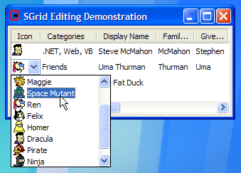
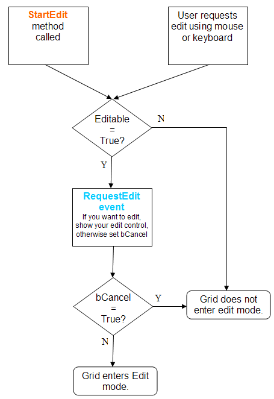
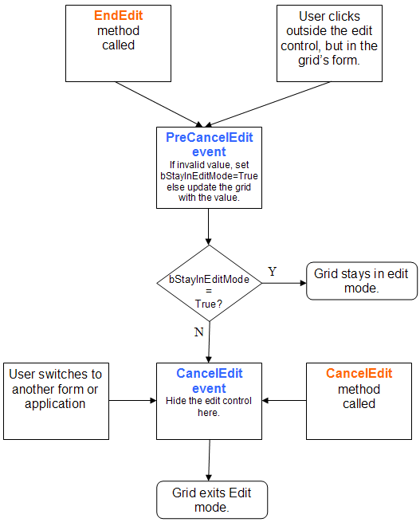
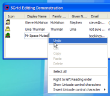
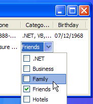

VB5 SGrid Edit Sample (61K)
VB5 SGrid Edit Sample (61K)
 VB6 SGrid Edit Sample (57K)
VB6 SGrid Edit Sample (57K)
 24 Jan 2004
24 Jan 2004
First Posted
 vbAccelerator ComboBoxEx Control
vbAccelerator ComboBoxEx Control
 vbAccelerator ImageList Control and Class v2.0
vbAccelerator ImageList Control and Class v2.0
 Text Box Balloon tip support in XP
Text Box Balloon tip support in XP

Using Editable in SGrid 2
This article describes how to use the Editable setting in SGrid 2.0, which has been made more flexible and reliable compared to the previous version of the grid. It also provides a couple of handy controls - a drop-down picker which allows you to pick one or more of a selection of items and a popup tip control that works under any OS.
Editable Grids
Unlike some other grids, SGrid 2.0 does not internally include any edit controls for the cells. This is done because there are great variety of editors you may want for a cell: some cells require a text box that can be validated, others require drop-down lists and others may require something more sophisticated. By not tying the grid to any specific implementation you can have complete freedom to build any sort of edit mode you need for a particular cell. However, the consequence there is a bit more work to be done when creating an editable cell. This article describes how to use the edit mode and demonstrates how to use text boxes and combo boxes for editing, and finally describes implementing check boxes for cells.
Edit Mode Basics
To make SGrid editable, you set the Editable property to True. By default, the grid assumes that it should go into edit mode when the user either clicks on a selected cell, double-clicks on a cell or when the F2 or Return keys are pressed. You can change this so that the grid automatically enters edit mode on selection of a cell by setting the SingleClickEdit property to True.
The grid will then start firing three events:
- RequestEdit
Fired when the grid detects it should enter edit mode. In response to this event you should either show your edit control at the correct position or set the bCancel property to False to prevent the grid from entering edit mode. - PreCancelEdit
Fired when the grid detects that it should leave edit mode for a cell but before it does. This provides a way for you to validate the contents of the edited area prior to leaving edit mode, and to commit the edited value to the grid's cell. - CancelEdit
Fired when the grid detects that edit mode must be cancelled. At this point you should hide the edit control.
The edit mode of the control can also be programmatically initiated and terminated using the StartEdit, EndEdit and CancelEdit methods. These methods raise events just as if the action had been performed by the user, and hence the same techniques are used to respond to the edit mode setting.
The following diagrams show the program flow for each of the edit modes:
1. Initiating Edit Mode
2. Leaving Edit Mode
Having seen the basics of edit mode, let's look at implementing edit mode using a Text Box, a Combo Box and a custom edit control implementation.
1. Editing Using a TextBox
Text Box Editing in the Sample
In all edit modes, there are three events you will need to respond to:
- RequestEdit. Respond by either displaying the control or setting the bCancel parameter to True.
- PreCancelEdit. Validate the information that has been entered (if necessary) and commit it to the grid if it's ok, otherwise set bStayInEditMode to True.
- CancelEdit. Hide any visible edit controls.
Here's the code you need for a simple editor using a TextBox:
Private Sub grdEdit_RequestEdit( _
ByVal lRow As Long, ByVal lCol As Long, _
ByVal iKeyAscii As Integer, bCancel As Boolean)
Dim lLeft As Long
Dim lTop As Long
Dim lWidth As Long
Dim lHeight As Long
grdEdit.CellBoundary lRow, lCol, lLeft, lTop, lWidth, lHeight
lLeft = lLeft + grdEdit.left
lTop = lTop + grdEdit.top + Screen.TwipsPerPixelY
Select Case grdEdit.ColumnKey(lCol)
Case "Name"
txtEdit.Text = grdEdit.CellText(lRow, lCol)
txtEdit.Move lLeft, lTop, lWidth, lHeight
txtEdit.Visible = True
txtEdit.SetFocus
Case ' etc for other columns
End Select
End Sub
Private Sub grdEdit_PreCancelEdit( _
ByVal lRow As Long, ByVal lCol As Long, _
newValue As Variant, bStayInEditMode As Boolean)
Dim sText As String
Select Case grdEdit.ColumnKey(lCol)
Case "Name"
grdEdit.CellText(lRow, lCol) = txtEdit.Text
' etc for other columns
End Select
End Sub
Private Sub grdEdit_CancelEdit()
txtEdit.Visible = False
End Sub
Note that in the RequestEdit event you get the Ascii code of the key that was pressed (if any) to commence editing. Users sometimes expect that typing a letter into a cell will immediately cause that letter to appear in the edit box. Code like this can be used to provide a natural edit:
If (KeyAscii = 0) Then
txtEdit.Text = grdEdit.CellText(lRow, lCol)
txtEdit.SelStart = 0
If (Len(txtEdit.Text) > 0) Then
txtEdit.SelLength = Len(txtEdit.Text)
End If
Else
txtEdit.Text = Chr(iKeyAscii) & grdEdit.CellText(lRow, lCol)
txtEdit.SelStart = 1
If (Len(grdEdit.CellText(lRow, lCol)) > 0) Then
txtEdit.SelLength = Len(grdEdit.CellText(lRow, lCol))
End If
End If
When the user is typing into the TextBox, they will expect certain key strokes to exit or commit the editing action. Since your TextBox has the focus, you need to handle the key events in the TextBox and then make the correct call on the grid. Typically the Tab and Return keys are used to commit an edit, whereas the Escape key is used to cancel an edit. At the same time, note that the default Window procedure for a Windows Edit control is coded to beep whenever the user presses these keys. You can stop this by modifying the KeyAscii sent to the control to 0:
Private Sub txtEdit_KeyDown( _
KeyCode As Integer, _
Shift As Integer)
Select Case KeyCode
Case 9 ' tab
grdEdit.EndEdit
KeyCode = 0
Case 13 ' return
grdEdit.EndEdit
KeyCode = 0
Case 27 ' escape
grdEdit.CancelEdit
KeyCode = 0
End Select
End Sub
Private Sub txtEdit_KeyPress( _
KeyAscii As Integer)
' Stop annoying beeping:
Select Case KeyAscii
Case 9
KeyAscii = 0
Case 13
KeyAscii = 0
Case 27
KeyAscii = 0
End Select
End Sub
You can also start validating the entered text before leaving edit mode. The sample code demonstrates validating the birthday column to check it is either a valid date or blank, and uses a VB control to show a popup tip if the text isn't valid:
Private Sub grdEdit_PreCancelEdit( _
ByVal lRow As Long, ByVal lCol As Long, _
newValue As Variant, bStayInEditMode As Boolean)
Dim sText As String
Select Case grdEdit.ColumnKey(lCol)
...
Case "Birthday"
Dim vVal As Variant
If (validEditDate(False, vVal)) Then
grdEdit.CellText(lRow, lCol) = vVal
Else
bStayInEditMode = True
End If
End Select
End Sub
Private Function validEditDate( _
ByVal bHideOnly As Boolean, _
ByRef vValue As Variant) As Boolean
Dim sText As String
Dim bR As Boolean
sText = Trim(txtEdit.Text)
If (Len(sText) = 0) Then
vValue = Empty
bR = True
Else
If (IsDate(sText)) Then
vValue = CDate(sText)
bR = True
End If
End If
If Not (bR) Then
If Not (bHideOnly) Then
If Not (tipPopup1.Showing) Then
tipPopup1.Title = "Invalid Date Format"
tipPopup1.Text = "(Message Here)"
tipPopup1.Show Me.hWnd, _
txtEdit.left \ 15, _
(txtEdit.top + txtEdit.Height) \ 15 - 4
End If
End If
Else
If (tipPopup1.Showing) Then
tipPopup1.Hide
End If
End If
validEditDate = bR
End Function
The popup tip control uses the SetWindowRgn API to set the region, SetParent and SetWindowPos to show the control floating over all other controls and so should work under any OS. This functionality is built into TextBoxes under Windows XP and above, see the TextBox Balloon Tip Support article for more details on implementing it.
Finally, you may want to control the grid's response to some keys before edit mode is entered. For example, the user may expect that the Delete key will delete the text in a cell. Do this by responding to the Grid's KeyDown event:
Private Sub grdEdit_KeyDown( _
KeyCode As Integer, _
Shift As Integer, _
bDoDefault As Boolean _
)
If (KeyCode = vbKeyDelete) Then
Dim lCol As Long
Dim lRow As Long
lCol = grdEdit.SelectedCol
lRow = grdEdit.SelectedRow
If (lCol > 0) And (lRow > 0) Then
Select Case grdEdit.ColumnKey(lCol)
Case "Name"
grdEdit.CellText(lRow, lCol) = Empty
' ... etc
End Select
End If
End If
End Sub
2. Editing Using a ComboBox
Editing using a ComboBox proceeds mostly in the same way as for a text box. Note that combo boxes can be hard to deal with because of the difficulty in determining whether a Click event occurred during navigation of the items in the drop down or due to a selection.
The easiest way to handle this is to ignore Click events entirely and instead only commit the selected value when the grid's PreCancelEdit event fires, or the user presses Return, Escape or Tab on the control. Proceeding this way means that the code to handle a combo box is exactly the same as for a TextBox.
The only other thing you might want to do is to hide the Combo Box if the user clicks on an item in the drop-down causing it to close up. Owing to the issues with the Click event (which will also fire during keyboard navigation with the arrows) you will need to be careful to check how the click occurred. To do this, you need to store the last drop-down state of the combo box and the last ListIndex. When the Click event fires, if the combo box has switched from dropped to closed, and the ListIndex has changed, then the edit should be committed. Using a control like the vbAccelerator ComboBoxEx control as used in the demo will help to do this as it includes events and properties which allow you to determine the drop-down state at any time (although you can subclass VB ComboBoxes to obtain the same information).
3. A Custom Edit Control - Selecting from a Checked List
Check Picker Control in the Demonstration
In some cases you might want a cell to contain a selection of zero, one or more items from a list. Examples of this are assigning one or more categories to a contact, or the data-field chooser in Excel Pivot tables. It may be possible to do this using a combo box but you will need to customise it to display check boxes and also to modify the combo box's standard behaviour so it does not close up when an item is selected, which is quite tricky. Hence a custom control similar to the control used by Excel.
The ddnMultiSelect control provided in the download is implemented in two parts: one part to show the selection and another to show the drop-down section (in fact, they are implemented using the same control with a state variable to control which part of the control is being displayed). These are then be linked together at run-time by the selection part firing the RequestDropDownInstance. A single drop-down instance can be reused by many instances of the selection control.
The items in the control are configured using the Add and Remove methods. There are then a series of Itemxxx properties which allow you to modify items and/or set the check state.
To allow the selected list to be stored and displayed in a grid cell, the Selection property gets or sets a delimited list of the text for the selected items, and the delimiter configurable using the Delimiter property.
Using the control as an editor is then accomplished as follows:
Private Sub configureCategories()
' Add some items to pick from in the Categories
' box:
With selCategories
.Height = cboIcon.Height
.Delimiter = ","
.AddItem "", -1, ".NET", True
.AddItem "", -1, "Business", True
.AddItem "", -1, "Family", False
.AddItem "", -1, "Friends", False
.AddItem "", -1, "Hotels", False
.AddItem "", -1, "Restaurants", False
.AddItem "", -1, "Personal", False
.AddItem "", -1, "Web", False
.AddItem "", -1, "VB", True
End With
End Sub
Private Sub grdEdit_RequestEdit( _
ByVal lRow As Long, ByVal lCol As Long, _
ByVal iKeyAscii As Integer, bCancel As Boolean)
Dim lLeft As Long
Dim lTop As Long
Dim lWidth As Long
Dim lHeight As Long
grdEdit.CellBoundary lRow, lCol, lLeft, lTop, lWidth, lHeight
lLeft = lLeft + grdEdit.left
lTop = lTop + grdEdit.top + Screen.TwipsPerPixelY
Select Case grdEdit.ColumnKey(lCol)
Case "Categories"
' Select the delimited list into the control:
selCategories.Selection = grdEdit.CellText(lRow, lCol)
selCategories.Move lLeft, lTop, lWidth, lHeight
selCategories.Visible = True
selCategories.SetFocus
' etc for other columns
End Select
End Sub
Private Sub grdEdit_PreCancelEdit( _
ByVal lRow As Long, ByVal lCol As Long, _
newValue As Variant, bStayInEditMode As Boolean)
Dim sText As String
Select Case grdEdit.ColumnKey(lCol)
Case "Categories"
' Transfer the delimited list to the cell:
grdEdit.CellText(lRow, lCol) = selCategories.Selection
' etc for other columns
End Select
End Sub
Private Sub grdEdit_CancelEdit()
selCategories.Visible = False
End Sub
Conclusion
This article has described how to use SGrid 2.0's Editable mode, with some examples for TextBox, ComboBox controls and a custom control for selecting multiple items in a single cell. It also provides a useful control for showing popup tips on any OS.